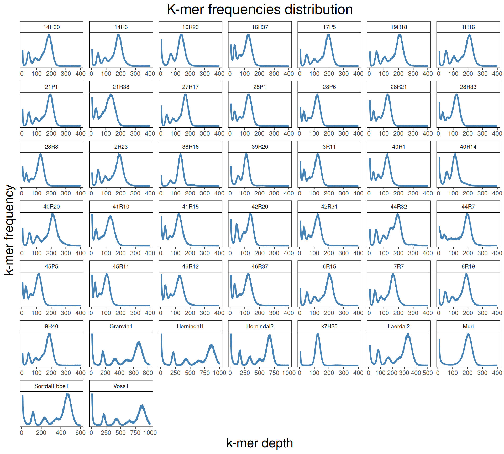

1 QC and Genome Composition assessment
1.1 On this page
Biological insights and take-home messages are at the bottom of the page at section Lesson Learnt: Section 6.5.
- Here
1.2 Reads QC and Filtering
Just trim low quality bases with Trimmomatic and discard short reads. I keep only properly paired reads and I discard the unpaired, since the latter are just a tiny fraction of my total data, they complicate the analysis and there is not much added value in them (at least for the analysis we run).
The file sample.lst just contains the names of my kveiks samples.
# generate FastQC report
for file in *.fastq; do
~/bin/FastQC/fastqc $file &
done
# LowQ base trimming and filtering
while read line; do
java -jar ~/bin/trimmomatic/trimmomatic.jar PE \
-threads 72 \
-phred33 \
$line.R1.fq.gz $line.R2.fq.gz \
$line.R1.tr.fq.gz $line.R1.tr.un.fq.gz $line.R2.tr.fq.gz $line.R2.tr.un.fq.gz \
SLIDINGWINDOW:10:30 \
TRAILING:30 \
MINLEN:50
done < sample.lst1.3 Genome Composition
We check the composition of the sequenced kveiks by aligning the reads to a set of Saccharomyces reference genomes.
First, we align the reads to the six Saccharomyces reference genomes. Then we create 10kb windows with bedtools and we calculate the average coverage for each window.
## index the reference genome
~/bin/bwa/bwa index Saccharomyces_RefGen.fa
## reads alignment
while read line ; do
bwa mem -t 72 \
-K 100000000 \
Saccharomyces_RefGen.fa \
"${line}".R1.tr.fq.gz \
"${line}".R2.tr.fq.gz \
> "${line}".align.sam
samtools view -@ 72 -Sb \
"${line}".align.sam > "${line}".align.bam
samtools sort -@ 72
"${line}".align.bam "${line}".align.sort
done < ../sample.lst
## bam2bed
# prepare reference genomes
samtools-1.9/samtools faidx Saccharomyces_RefGen.fa
gatk CreateSequenceDictionary --R Saccharomyces_RefGen.fa
cut -f 2,3 Saccharomyces_RefGen.dict \
| tail -n +2 \
| sed 's/LN://g' \
| sed 's/SN://g' \
> Saccharomyces_RefGen.bedchor
bedtools makewindows \
-g Saccharomyces_RefGen.bedchor \
-w 1000 \
> Saccharomyces_RefGen.1kb_win.tab
# calculate mean coverage
while read line; do
bedtools coverage \
-a Saccharomyces_RefGen.1kb_win.tab \
-b "${line}".align.sort.bam -mean \
> "${line}".align.sort.1kb_cov.bed;
done
# format output
for file in *.1kb_cov.bed ; do
sed -i 's/Scere_/Scere\t/g' $file;
sed -i 's/Seuba_/Seuba\t/g' $file;
sed -i 's/Skudr_/Skudr\t/g' $file;
sed -i 's/Smika_/Smika\t/g' $file;
sed -i 's/Spara_/Spara\t/g' $file;
sed -i 's/Suvar_/Suvar\t/g' $file;
python bed_remove0coverage.py \
--input $file \
| sed '/^[[:space:]]*$/d' \
> $(basename $file .bed).no0.bed;
done
for file in *.no0.bed; do
NAME=$(basename $file .align.sort.1kb_cov.no0.bed);
sed -i "s/^/$NAME\t/" $file;
done
cat *.1kb_cov.no0.bed > Viking.species.cov.bed
# generate per chromosomes coverages
while read line; do
OLD=$(echo $line | cut -d " " -f 1)
NEW=$(echo $line | cut -d " " -f 2)
sed -i "s/$OLD\t/$NEW\t/g" Viking.species.cov.chr.bed
done < ref_chr_names.lst
# clean output
for file in *.no0.bed; do
cp $file $file.1;
while read line; do
OLD=$(echo $line | cut -d " " -f 1);
NEW=$(echo $line | cut -d " " -f 2);
sed -i "s/$OLD\t/$NEW\t/g" $file.1;
done < ../00_ref_genomes/ref_chr_names.lst;
grep Chr $file.1 > $(basename $file .bed).chr.bed;
rm $file.1 &
doneWe then remove windows with 0 coverage to have a clearer figure, and we plot the coverages with transforming the y axis in log10 scale, since Krogerus kveiks have much higher coverage than the strains we sequenced.
data_cov = read.delim("data/p01-01/Viking.species.cov.chr.bed", header = FALSE)
data_cov$V7 = ifelse(data_cov$V6 >= 1, "Up", "Down")
# ylim = 1500
ggplot(data_cov, aes(x = V2, y = V6)) +
geom_jitter(aes(color = V7),
show.legend = FALSE,
alpha = 0.035,
shape = ".",
position = position_jitter(0.475)) +
geom_hline(yintercept = 1, linetype = 2, color = "red") +
coord_cartesian(expand = FALSE) +
scale_color_manual(values = c("grey75", "cyan4")) +
scale_y_continuous(limits = c(-4, 9000),
trans = "log2",
breaks = c(1, 10, 100, 1000),
labels = scales::comma) +
labs(title = "Coverage of Reference Genomes",
x = "Reference Species",
y = "Coverage") +
facet_wrap(~V1, scales = "free_y") +
theme(plot.title = element_text(hjust = 0.5, size = 20),
panel.background = element_blank(),
panel.grid.major.x = element_blank(),
panel.grid.major.y = element_line(colour = "gray75", size = 0.5),
strip.background = element_rect(colour = "black", fill = NA),
strip.text = element_text(size = 8),
axis.ticks.y = element_blank(),
axis.text.x = element_text(angle = 90, vjust = 0.65))All sequenced farmhouse yeasts are pure S. cerevisiae strains, except for Muri and k7R25 that are S. cerevisiae, S. eubayanus and S. uvarum triple hybrids.
We can dig in into the coverage of the single chromosomes and visualize the extent of hybridization and eventual aneuploidies.

Muri and k7R25 are triple hybrids S. cerevisiae X S. eubayanus X S. uvarum. What is extremely interesting is that they share the same genomic composition in terms of origin of the chromosomes, but they have distinct CNVs patterns. I would suggest a common origin for such hybrid.
1.4 Ploydies estimation
We can estimates Kveiks ploidy by looking at the k-mer frequency distributions of the sequenced reads obtained from whole genome sequencing.
# calculate kmer freq
for file in 01_alignments/*bam; do
~/bin/ntCard/bin/ntcard \
--threads=64 \
--kmer=41 \
--pref=$(basename $file .align.sort.md.r.bam).kmer41freq \
$file;
done
# merge outputs
for file in *.hist; do
tail -n +3 $file > $file.1;
mv $file.1 $file;
cat $file | sed "s/^/$(basename $file .kmer41freq_k41.hist)\t/g";
done > Viking.species.kmer41freq.txtKmer frequency distribution plots can suggest us the degree of heterozygosity of kveiks genomes. All Kveiks seems to have a high degree of heterozygosity, except for hybrid strains Muri and k7R25. This support the idea that the sequenced kveiks so far are tetraploid S. cerevisiae, while Muri and k7R25 are triploid hybrids S. cerevisiae X Seubayanus X S. uvarum.
data_k = read.delim("./data/p01-01/Viking.species.kmer41freq.mod.txt", header = FALSE)
data_k$V2 = as.numeric(data_k$V2)
data_k$V3 = as.numeric(data_k$V3)
# plot kmer distributions
ggplot(data_k, aes(x = V2, y = V3)) +
geom_line(color = "steelblue", size = 1) +
scale_y_continuous(labels = function(x) format(x, big.mark = ",", scientific = FALSE)) +
facet_wrap(~V1, scales = "free") +
labs(title = "K-mer frequencies distribution",
x = "k-mer depth",
y = "k-mer frequency") +
theme(plot.title = element_text(size = 20, hjust = 0.5),
axis.title = element_text(size = 18),
axis.ticks.y = element_blank(),
axis.text.y = element_blank(),
panel.background = element_blank(),
panel.border = element_rect(colour = "black", fill = NA),
strip.background = element_rect(colour = "black", fill = NA),
strip.text = element_text(size = 8))
1.5 Lessons Learnt
Based on the we have learnt:
- Fr
1.6 Session Information
R version 4.3.3 (2024-02-29)
Platform: x86_64-pc-linux-gnu (64-bit)
Running under: Ubuntu 24.04.3 LTS
Matrix products: default
BLAS: /usr/lib/x86_64-linux-gnu/blas/libblas.so.3.12.0
LAPACK: /usr/lib/x86_64-linux-gnu/lapack/liblapack.so.3.12.0
locale:
[1] LC_CTYPE=en_US.UTF-8 LC_NUMERIC=C LC_TIME=C
[4] LC_COLLATE=en_US.UTF-8 LC_MONETARY=C LC_MESSAGES=en_US.UTF-8
[7] LC_PAPER=C LC_NAME=C LC_ADDRESS=C
[10] LC_TELEPHONE=C LC_MEASUREMENT=C LC_IDENTIFICATION=C
time zone: Europe/Brussels
tzcode source: system (glibc)
attached base packages:
[1] grid stats graphics grDevices utils datasets methods
[8] base
other attached packages:
[1] magrittr_2.0.3 gridExtra_2.3 ggplot2_3.5.2
loaded via a namespace (and not attached):
[1] vctrs_0.6.5 cli_3.6.5 knitr_1.50 rlang_1.1.6
[5] xfun_0.52 generics_0.1.4 jsonlite_2.0.0 labeling_0.4.3
[9] glue_1.8.0 DT_0.33 htmltools_0.5.8.1 sass_0.4.10
[13] scales_1.4.0 rmarkdown_2.29 jquerylib_0.1.4 crosstalk_1.2.1
[17] evaluate_1.0.4 tibble_3.3.0 fastmap_1.2.0 yaml_2.3.10
[21] lifecycle_1.0.4 compiler_4.3.3 dplyr_1.1.4 RColorBrewer_1.1-3
[25] htmlwidgets_1.6.4 pkgconfig_2.0.3 farver_2.1.2 digest_0.6.37
[29] R6_2.6.1 tidyselect_1.2.1 dichromat_2.0-0.1 pillar_1.11.0
[33] bslib_0.9.0 withr_3.0.2 tools_4.3.3 gtable_0.3.6
[37] cachem_1.1.0